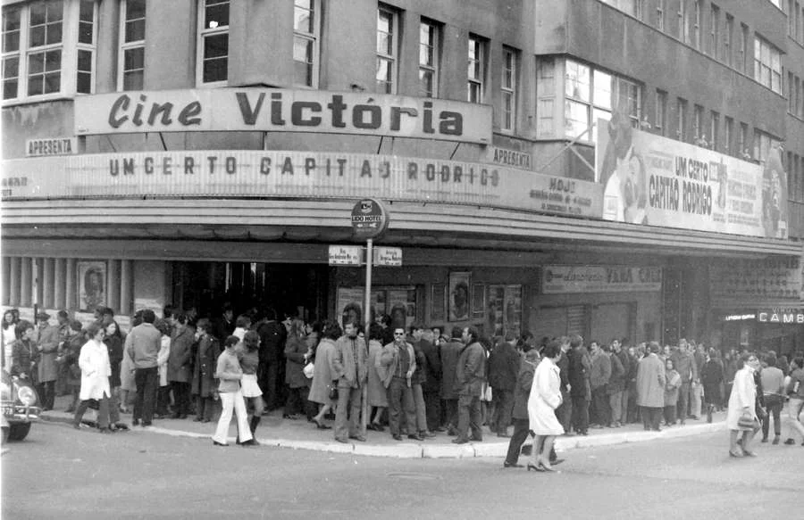

cinemaempoa
(uma apresentação rápida)
## Por que esse projeto? <p>  <small>Fonte: <a href="https://www.correiodopovo.com.br/not%C3%ADcias/cidades/cine-vict%C3%B3ria-as-mem%C3%B3rias-de-quem-deu-nome-ao-cinema-de-rua-que-reabrir%C3%A1-em-julho-1.1058259">correio do povo</a></small> </p>
- Uma homenagem as salas de cinema da cidade - Uma forma de mostrar pras pessoas que esses locais existem - Uma celebração aos filmes que estão fora do circuito comercial
## Aspecto histórico <img src="./midias/um-e-pouco-verdes-anos.jpg"> Debates sobre as diferenças geracionais
## Aspecto cultural Conceitos de outridade
## Aspecto corrente Filmes atuais que não tem porte comercial pra competir com os blockbusters
## Aspecto democrático As salas facilitam o acesso a cultura com **preços acessíveis**, um **constante convite ao público**, uma **curadoria para o público infantil**.
## Qual a proposta? É simples: **registrar em um único local** a **programação** dos cinemas **alternativos** de Porto Alegre.
Essa ideia não é nova - <https://cinemaempoa.wordpress.com/> <br/>(2015 -- 2019) - <https://cinemaemcuritiba.wordpress.com/> <br/>(2013 -- 2019)
### O trabalho é ingrato Análise, curadoria, registro, divulgação...
### O uso de automação <img src="./midias/cinemaempoa-robot.jpeg">
### Não basta registrar A informação precisa ser **aberta**, de **fácil acesso**, **acessível** e **respeitar a privacidade** dos usuários.
### Informação Aberta A visualização das programações não deve exigir nenhum tipo de cadastro. > [...] hoje em dia a principal forma de divulgação dessas salas é através das **redes sociais**, controladas por empresas com fins lucrativos [..]
### Fácil Acesso Site de fácil utilização: - Fornecer fonte do que é publicado; - Instruções claras; - Redução na quantidade de dados trafegados; - Redução no processamento realizado;
### Acessível Usar tecnologias que promovam o acesso de usuários com deficiências ou limitações - HTML semântico; - Navegável pelo teclado; - Descrição nas imagens;
### Privacidade Coletar o mínimo de dados dos usuários.
### Do que é composto o projeto? 1. Um módulo de web scrapping <small>Requests + BeautifulSoup + muito, mas muito regex<sup style="vertical-align: super !important;">socorro</sup></small> 2. [Um site](https://cinemaempoa.com.br) <small>Flask + sqlite3 + htmlzinho e javascript basic</small>
## Escopo do projeto Projeto **colaborativo**, guiado por **três frentes principais**. 1. Automação da coleta de dados 2. Desenvolvimento do portal 3. Análise dos dados
### Automação da coleta de dados [Issues listados como **paulo amorim**, **sala redencao**, **cinebancarios** e **capitolio**](https://github.com/guites/cinemaempoa/issues?q=is%3Aopen+is%3Aissue+label%3Acinebancarios%2Cpaulo-amorim%2Csala-redencao)
### Desenvolvimento do portal [Issues listados como **website**](https://github.com/guites/cinemaempoa/issues?q=is%3Aopen+is%3Aissue+label%3Awebsite)
### Análise dos dados [Issues listados como **data-science**](https://github.com/guites/cinemaempoa/issues?q=is%3Aopen+is%3Aissue+label%3Adata-science)
## Próximos passos <small>algumas ideias soltas</small> - Definir um **plano de desenvolvimento do projeto**. - Organizar os issues de forma lógica. - Contactar pessoas que querem **escrever sobre cinema**. - Disponibilizar os dados em forma de **dataset**. - Promover análise dos dados pela comunidade.
Obrigado
pela atenção :)